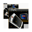
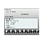
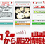

⚠️ WARNING ⚠️ these files are specifically designed for the japanese model of the com-2 and may not work correctly or even break something on a non-japanese unit!! i haven't tried any of them on my american model yet, so i have no idea how they'll behave.
|
Calendar
"What day is it today? Quick confirmation from the 'mylo' button. Display the calendar for the current month." |
|  |
Slide Puzzle
"15 nostalgic panels appear as widgets. You can challenge as many times as you like with Re-Shuffle." |
|
Calculator
"Press the 'mylo' button for quick calculations with many digits. Even simple calculations can be done quickly with mylo." |
|
World Clock
"Even when calling overseas, you can rest assured with this. Displays the time not only in Japan but around the world. It is also useful for overseas business trips and trips." |
|  |
To-Do List
"It is a sticky note that you can easily write a little memo such as To-Do. Written memos can be viewed with a single touch of the 'mylo' button." |
|  |
Search for surrounding information from here
"'Search for surrounding information from here' widget is linked with PlaceEngine technology. You can get various useful information such as nearby restaurants, beauty salons, and stations." |
|
SHOUTcast
"Widget for "SHOUTcast (English version)", an Internet radio distribution service covering over 10,000 stations provided by AOL. You can easily enjoy Internet radio, and the fun of "mylo" will spread even more. |
 |
mixi
i'm not sure what this is - it may be used to access the japanese social media site mixi? |
|
My Contacts
create a grid of instant messenger contacts on your mylo screen. |
|
RSS
subscribe to RSS feeds and recieve a system notification whenever a new post appears on one of your feeds. |
|
Sudoku
a homebrew sudoku game i found on a now-defunct mylo forum. it seems to have originally been developed by apple as a demo for the original iPhone. |